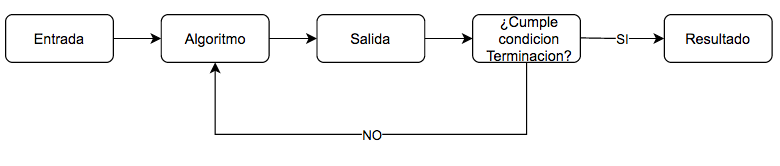
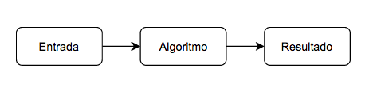
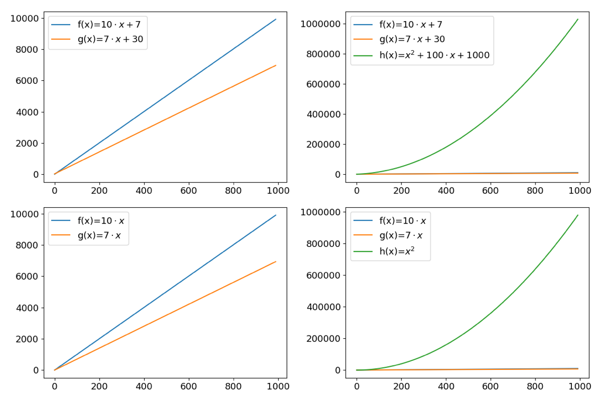
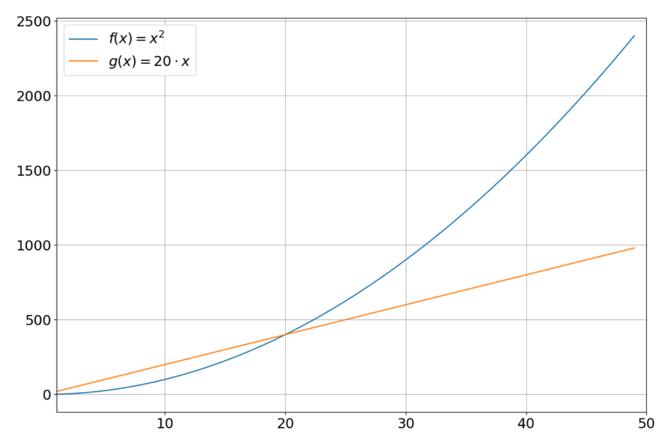
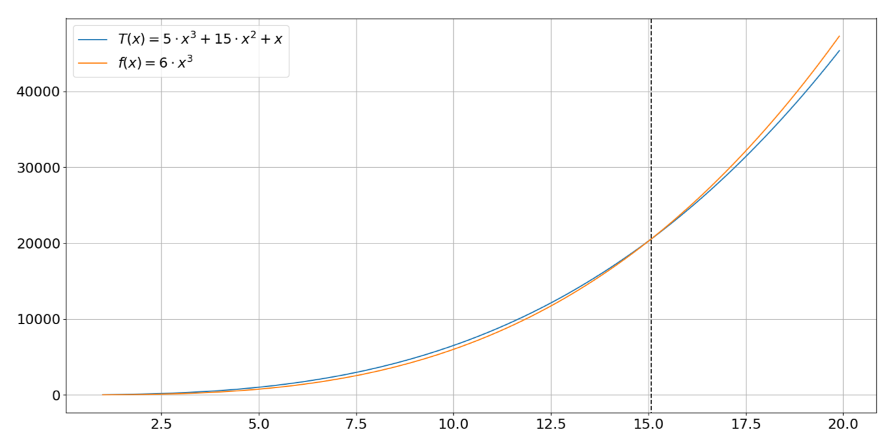

1. Fundamentos de Análisis Numerico¶
1.1. Tipos de Métodos (algoritmos) Numéricos¶
Podemos clasificarlos en dos:
Métodos Iterativos

Métodos Directos

1.2. Análisis de algoritmos: iterativos¶
Es natural hablar de convergencia para los métodos iterativos
- Convergencia
Puede definirse en terminos del límite de una sucecsión. Diremos que un algoritmo converge a \(l\) si:
\[\lim_{n \to \infty} x^{(n)}= l\]donde \(x^{(n)}\) es la salida del algoritmo en la iteración \(n\).
Por esto, dado un condicion de terminación que trunca el método dado como resultado el error de truncamiento
- Error de truncamiento
El errro de truncamiento en la iteración \(n\) se define como:
\[E_n=|x^*-x^{(n)}|\]donde \(x^*\) es la solución y \(x^{(n)}\) es la salida del algoritmo en la iteración \(n\).
1.3. Análisis de algoritmos: directos¶
En cambio, en los métodos directos en general se entrega una solucion exacta o aproximada.
- Error de redondeo
El error de redondeo de un algoritmo se define como:
\[E = |x^* - \bar{x}|\]donde \(x^*\) es la solución y \(\bar{x}\) es la salida del algoritmo
1.4. Análisis asintótico¶
Vamos a ver uan serie de algoritmos y debemos poder decir que tan rapido es el método o que número de operaciones aproximadamente realizara.
Queremos determinar una función \(T(x): \mathbb{N} \to \mathbb{R}\) donde \(x\) es un número natural que indica el tamaño del problema y \(T(x)\) es un número real que se refiere al tiempo de convergencia/número de operaciones.
Para el análisis debemos decidir entre mayor exactitud o mayor manejabilidad. Para determinar esta función tratamos en:
Enfocarnos en el peor caso
Entender el panorama general
Análisis asintotico
1.4.1. El peor caso¶
Ciertos algoritmos tiene diferentes tiempos de convergencia dependiendo de la entrada (e.g. solución inicial). Nos interesa saber que ocurre en el peor caso, no en el mejor de los casos. ¿Por que?
Queremos garantizar una acota superior del tiempo de convergencia. Esta acota se cumple para cualquier solución inicial y de cualquier suposición.
1.4.2. El panorama general¶
No debemos preocuparnos por términos específicos, esto es, constantes y/o de orden inferior.
Manejabilidad: Especificar las constantes y los términos de orden inferior necesitan un análisis mas detallado que en general no ayudarán a entender mejor el tiempo de convergencia.
Constantes dependen de capacidad computacional: Segun lenguaje y computadora usada cada flop puede tardar mas o menos cierto tiempo.

1.4.3. La asíntota¶
Queremos determinar la asíntota. Esto es que pasa con \(T(x)\) cuando \(x\) es muy grande. ¿\(T(x)\)? cuando \(x \to \infty\)

1.5. Notación Gran O¶
- Notación Gran O
\(T(n) = O(f(n))\) si y solo si \(T(n)\) es eventualmente acotada superiormente por un múltiplo constante de \(f(n)\). Esto es, para constantes positivos \(c\) y \(n_0\) se cumple
\[ T(n) \leq c \cdot f(n)\]para todo \(n \geq n_0\)
\(T(n)\) es el tiempo de convergencia del peor de los escenarios y \(f(n)\) es una función “canónica”, e.g., \(n\), \(\log n\), \(n^2\).
Por ejemplo, polinomios de grado \(k\) son \(O(n^k)\). Un ejemplo especifico es: si tenemos un algoritmo cuyo tiempo de convergencia es \(T(n) = 10n5+3n3+n\) entonces ¿Cuál es \(f(n)\) tal que \(T(n)=O(f(n))\)?

Si escojo \(f(x)=x^3\) entonces \(n_0=15\) y \(c=6\) cumplen con \(T(x)= c \cdot f(x)\)